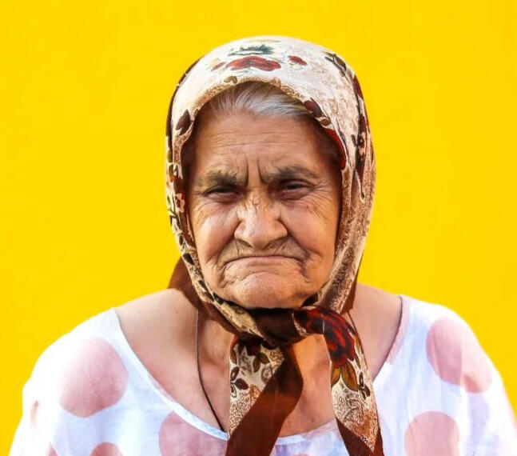
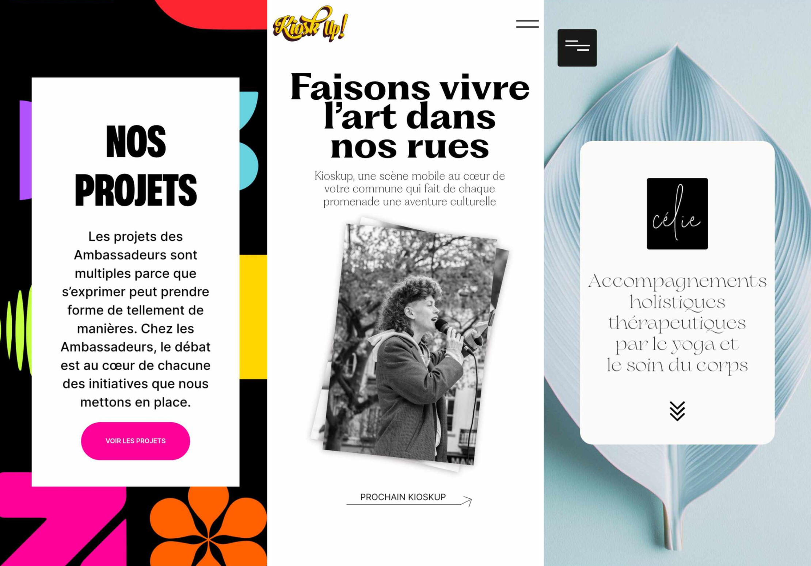
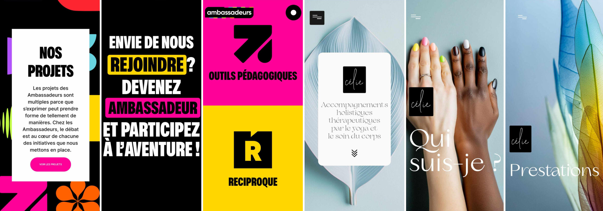
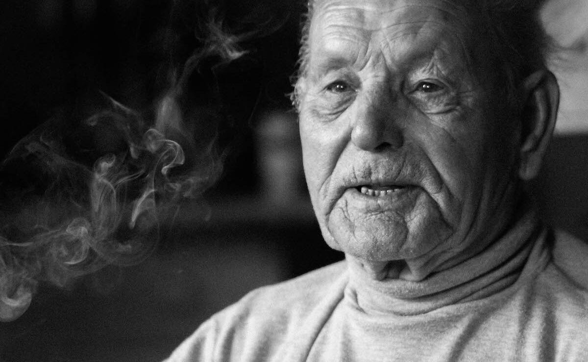

photo
INFAC
- 1993 - 1996
- Diplôme : Photographe
- 1996 - 1998
- Diplôme : Accès professionnel photographe
01

photo
social

design
02

2023-2025
Artsetpublics
Chargée de production, de communication et photographe officielle des événements Kioskup
Conception du site internet, Création de logo, création d’affiches de communication, création graphique, création animation
2002 - 2024
Freelance
Webdesigner, graphiste, photographe
Fonction : Création de site web, flyers, logo, print frisbee, skateboard …
2020-2021
Broksell
Création de logo, création d’affiches de communication, cartes de visite, création graphique, impression sur t-shirt, création du site web, …
2020-2021
Cousin
Participation à l’étude et à la création d’une plateforme digitale de soutien et de solidarité de quartier.
home-cousin.webflow.io.com
2020-2022
Kioskup
Création de logo, création d’affiches de communication, création graphique
2021-2024
Les Ambassadeurs d’expression citoyenne
1996 - 2002
AD Labo
Laboratoire photographie argentique professionnel
Photographe studio et extérieur, laborantine photo Pro couleur et noir et blanc pour l’agence Belga,pour photographe professionnel et pour particuliers
2026 - en cours
Samusocial
Centre d’urgence médicalisé
2021-2022
Samu social
Missions : Référente de nuit du centre Prince de Liège.
Responsable d’accueil des rentrées d’hébergement d’urgence, accompagnements des usagers dans leurs démarches, …
2020 - 2021
Missions : Assistante sociale de jour au centre Lemonnier femmes.
Accompagnements des usagers dans leurs démarches administratives
Avril 2019
L’auberge des migrants (Bénévolat)Assistante sociale
Mission : Reportage photo dans la « jungle de Calais »
Objectif : Démontrer l’existence encore bien réelle du camp de fortune de migrants et réfugiés de Calais. Dénoncer leurs conditions de survie ainsi que du travail effectué par les bénévoles et par l’association elle-même.
2018
Epicerie sociale Episol (Stage)
Etude : Assistante sociale
Secteur : Vente et redistribution de denrées alimentaires , organisation d’activités diverses pour les usagers, redirection vers des réseaux adéquats selon les problématiques rencontrés par ceux-ci.
2017
Centre Hospitalier Jean Titeca (Stage)
Etude : Assistante sociale
Secteur : Psychiatrie, femmes placées sous la mesure Nixon dans le cadre de la loi de mise sous protection de la personne des malades mentaux qui a été adoptée en Belgique le 26 juin 1990.
03
Le dialogue et une bonne communication sont pour moi des éléments essentiels. Je pense avoir naturellement une très bonne approche relationnelle qui me permet de ne pas juger et de placer l’intérêt des personnes en priorité.
Mon expérience m’a appris à connaître mes facultés d’adaptation face à beaucoup de situations. Ma nature autodidacte et créative me permet de développer des solutions innovantes et de m’adapter rapidement.
04
photo
Je porte un intérêt tout particulier à l’image. La photo de rue et la mise en valeur de celle-ci est mon passe temps favori.
A la demande d’asbl, l m’arrive de travailler comme bénévole pour documenter leurs démarches militantes
Exemple ici à Calais05